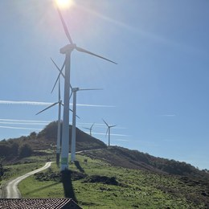

Herriko ibilbideak
Mallabiatik irtenda/Inguruko auzoak, mendiak eta herriak
Mallabia
oinez eta bizikletaz
Mallabiatik irten eta inguruko auzoak, mendiak eta herriak zeharkatzen dituzten ibilbideak. Bertatik bertara dokumentatuak, benetako datuekin, ez liburuxka batekoak.
Bertatik bertara
Dokumentatutako ibilbideak

Trabakua
bira
Pista zementu, harri eta lur artean; hasieran 300 metro baino gutxiagoko aldapa gogorra du, Aginagara desbideratze tekniko aukerakoa, eta Durangaldeko ikuspegi zabalak eskaintzen ditu Beranotik. Ibilbidea terrenoan bertan grabatua dago, ez mapa baten gainean proposatua.

Iturzuri, Zengotitagane
ur-jauzitik gora
Bidezidorra Mallabiako punturik altueneraino: ur-jauziak, historiaurreko trikuharri bat eta gailurrerdi bat bi aldeetara bistak dituena, Zengotitagane ekialdetik inguratu aurretik. Bertatik bertara grabatua, ez mapa batetik proposatua.

Zenarruza, San Kristobal
eta Zengotitagane
Zirkuitu luzea Trabakuatik: Zenarruzako kolegiata zisterziarra, artzainen ermita bat Oizen hegalean eta Iturzuriganako trikuharria, bi igoera luze jarraian. Bertatik bertara grabatua, ez mapa batetik proposatua.

Osma, Argiñeta
eta Gerea
Zirkuitua Trabakuatik, Durangaldeko ermita eta baserrien artean, Argiñetako Nekropoliraino, hogei bat Erdi Aroko hilobi Elorrion. Bertatik bertara grabatua, ez mapa batetik proposatua.
Oraindik ez dago mota honetako ibilbiderik.
— Ibilbide gehiago dokumentatu ahala, hemen gehituko dira.
Non aparkatu
Trabakuko mendatea · 43,2105° N, 2,5461° M
Mallabia herritik 5,7 km-ra, 7 minutu inguru autoz — ia ibilbide guztiak hemendik ateratzen dira, aparkaleku onarekin.
Nola iritsiIrteerak mendatetik